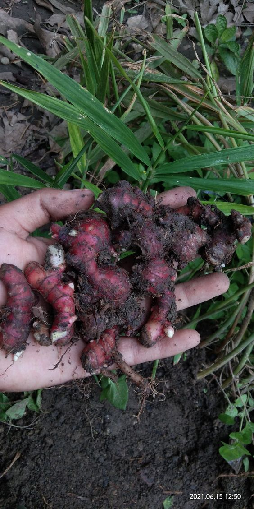

[1].png)


Kami percaya bahwa kesehatan yang baik dimulai dari pengetahuan yang benar. Di Nagari Palaluar, kami dari KKN UNAND 2024 dengan bangga mempersembah kan, Tanaman Obat Keluarga (TOGA) yang penuh manfaat bagi kesehatan Anda.
Tapi, TOGA itu apa sih?TOGA merupakan singkatan dari Tanaman Obat Keluarga yang terdiri dari ragam tanaman herbal yang dimanfaatkan oleh keluarga untuk pengobatan tradisional di rumah. TOGA mencakup berbagai jenis tanaman yang memiliki khasiat untuk mengobati atau mencegah berbagai penyakit ringan dan menjaga kesehatan secara alami.
Dari daun sirih yang harum hingga jahe merah yang hangat, kebun TOGA kami memiliki segala yang Anda butuhkan. Setiap tanaman ditanam dengan cinta dan perawatan, memastikan Anda mendapatkan manfaat maksimal dari setiap daun, batang, dan akar yang tumbuh dari tanaman. Kunjungi halaman kami untuk menemukan cara-cara mudah mengolah tanaman obat ini menjadi ramuan kesehatan yang menakjubkan!
Daftar Tanaman
Betadine
Cocor Bebek
Daun Jarak
Daun Pandan
Jahe
Jahe Merah

Kecapling
Kumis Kucing
Kunyit
Kunyit Putih

Lengkuas
Lidah Buaya